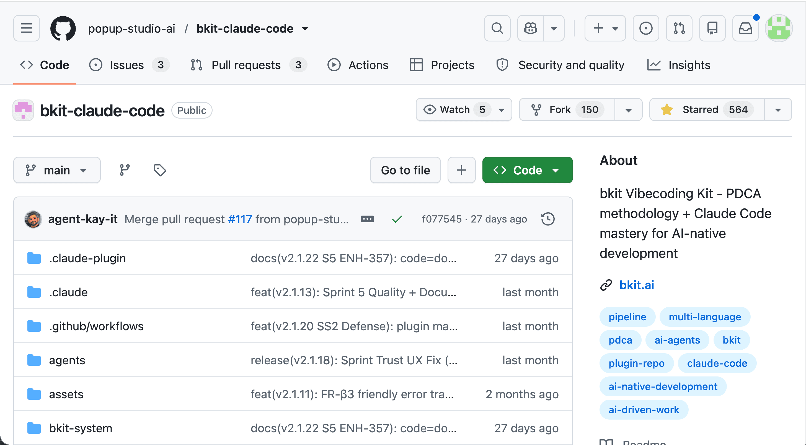

bkit : 비개발자를 위한 자율 개발 하네스

bkit
= 비개발자를 위한 자율 개발 하네스
(Claude Code 위에 올라타는 개발 OS)
★ 564 stars
150 forks
2026-06-29 기준
설치
claude plugin install bkit
44 skills · 34 agents
· 100% 오픈소스 · 무료
MESSAGE
17년 개발 노하우를 총망라 하여 코드를 모르는 비개발자도
개발자처럼 만들 수 있게
하자!